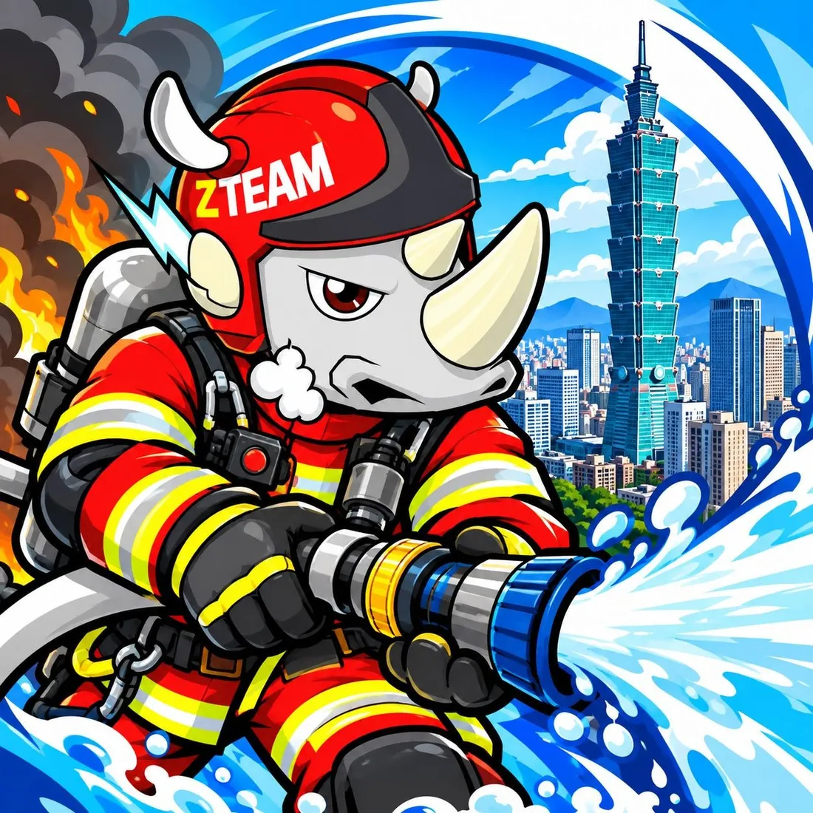
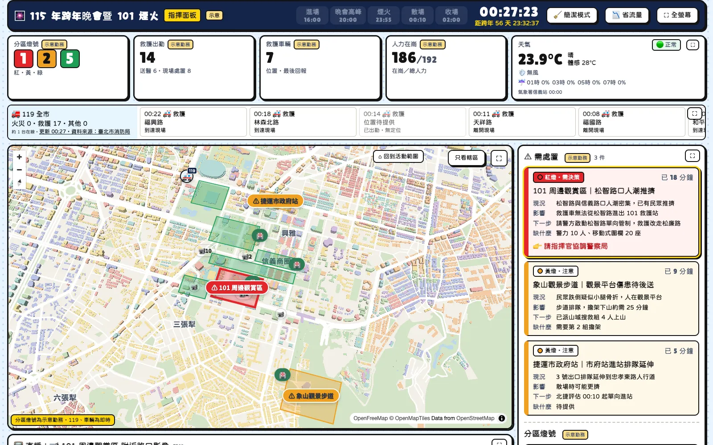
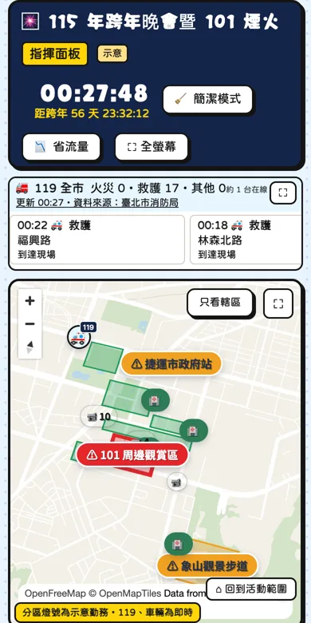
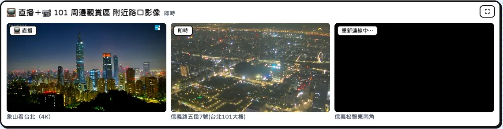
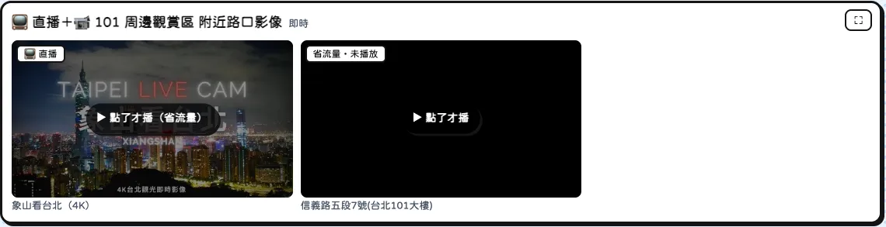

即時
資料自動更新，不必等人回報。
- 不用人工回報
- 案件自動上地圖
- 延遲會直接標示
戰情室把 119 案件、現場地圖與車輛、即時影像、天氣特報、網路輿情放在同一頁，指揮官不用打電話問現場，也能即時看全面。


戰情室畫面（119 為即時資料；分區燈號、待處置等勤務數字為示意，待市府會議決議後接入）
等電話、等群組回報，才能判斷
119 案件、監視器、天氣、新聞各在不同地方，資訊要經過轉述，難免慢幾分鐘。
打開就看到現場，當下就能判斷
所有資訊在同一個畫面自動更新；點一下案件，地圖直接跳到位置。
資料自動更新，不必等人回報。
現場需要看的，一頁全部看到。
先看重點，需要時再放大細節。
電腦、大螢幕、手機的瀏覽器都可以，不用安裝程式。
系統依日期自動顯示當天的活動範圍、分區與倒數；活動結束自動切回下一場。
點 119 案件，地圖跳到位置；點監視器，下方直接播放；任何一塊都能放大到整個螢幕。

跨年這類活動，很多人同時開著戰情室，現場網路也容易壅塞。下面這些已經做好。

直播加上分區附近的路口監視器，同時播放。

場地網路不好時一鍵切換：影像先顯示靜止畫面，點了才播，同時只播一支。
用量接近上限時，所有戰情室自動改成 5 分鐘更新一次 119，不會整晚空白；用量降下來自動恢復。
畫面直接顯示目前約幾台在看，事前事後都能查用量。
收起選單和次要資訊，只留地圖、119、待處置和影像，適合大螢幕投影。
第二大隊自行維護。換一場活動只要複製一份活動設定，10 月 31 日臺灣同志遊行就是這樣上線的。
平常完全免費。大型活動當天如果同時開著的電腦超過約 50 台，可以加購一個月約新臺幣 160 元的方案，額度會提高很多，跨年等級的用量足夠。
看得到。畫面會顯示目前約幾台在看，系統也保留每天的用量紀錄，活動前後都能查。
只有 119 案件那一塊會受影響，地圖、影像、天氣、輿情照常。而且用量接近上限時系統會自動降速，119 改成每 5 分鐘更新，不會整晚空白。
最需要注意的是頻寬，不是費用。每台會同時播直播和監視器，場地網路不好時切到「省流量模式」，影像改成點了才播，同時只播一支。
不會。每個資料來源都有備援，斷線或資料延遲時畫面會直接標示，例如「資料可能延遲」。
不會。只使用公開資料：119 公開案件的模糊位置、市府公開路口監視器、中央氣象署資料，不連接局內系統，也不顯示門牌號碼。
待處置、分區燈號、救護出勤、救護車輛、人力在崗這五項目前是示意資料，畫面上都有標示。等市府開會決議後再接入正式資料。
可以。同一套系統換活動設定就能用，跨年、遊行、大型賽事都適用。